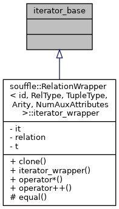
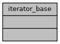

souffle
2.0.1-62-g772b0cb
iterator_base Class Reference
Inheritance diagram for iterator_base:

Collaboration diagram for iterator_base:

The documentation for this class was generated from the following file:
CompiledSouffle.h
Generated by
1.8.13
 1.8.13
1.8.13